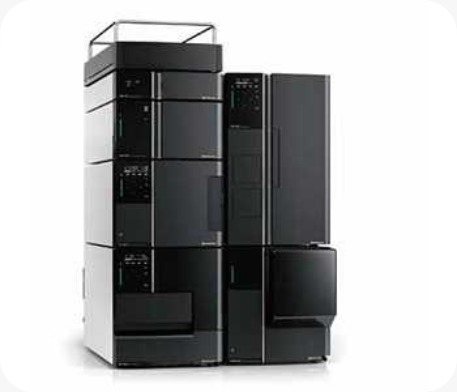
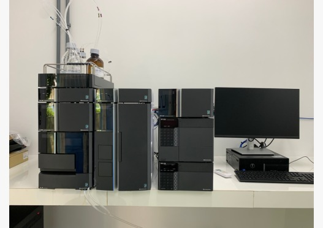
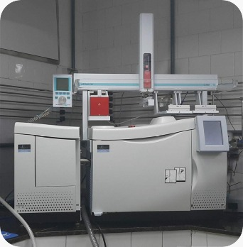

Equipamentos do Laboratório
O laboratório conta com uma série de equipamentos avançados para análise e pesquisa. Conheça alguns dos principais:
-

Sistema de Cromatografia Líquida de Ultra Alta Eficiência (SHIMADZU LC-40 NEXERA lite): Equipamento com capacidade de até 44MPa, detector espectrofotométrico "Photodiode Array" modelo SPD-M40, detector de fluorescência modelo RF-20ª, amostrador automático SIL-20A e software "Lab Solution Multi-PDA".
-

Cromatógrafo à Gás (Perkin Elmer Clarus 680): Equipamento com detector de Espectrometria de Massas, modelo 600C, ideal para análises complexas de compostos voláteis.
-

Sistema Cromatográfico Shimadzu LC 20AT Prominence: Equipamento com detector UV modelo SPD-20ª e software LC Solution® versão 1.24 SP1, utilizado para análises de líquidos em alta eficiência.
Aplicações dos Equipamentos
Estes equipamentos são utilizados em diversas áreas de pesquisa, tais como:
- Análise de compostos orgânicos e inorgânicos em líquidos e gases.
- Estudos de substâncias químicas em processos ambientais e industriais.
- Monitoramento de qualidade em produtos químicos e alimentos.
Objetivo
Os equipamentos de nosso laboratório são fundamentais para apoiar as pesquisas científicas e o desenvolvimento de novos métodos analíticos, visando a precisão, a confiabilidade e a inovação nas análises laboratoriais.